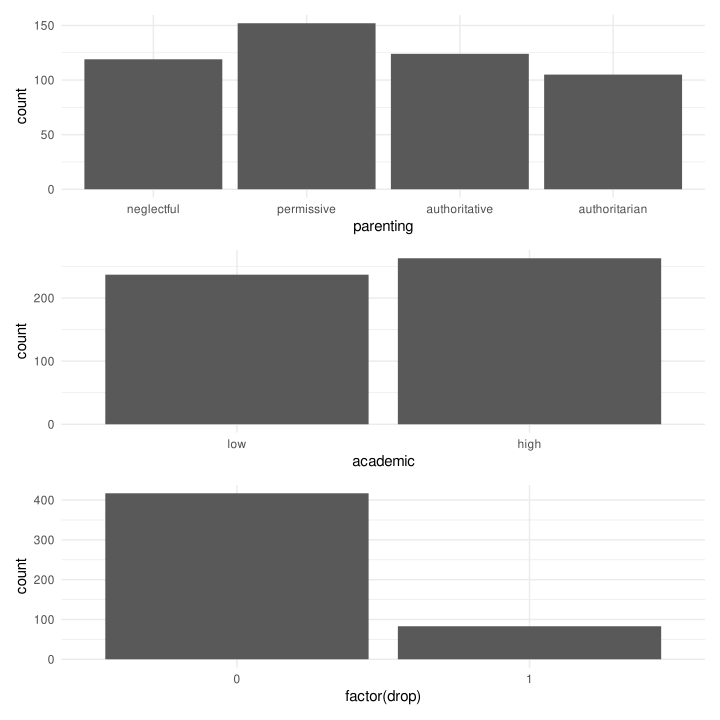
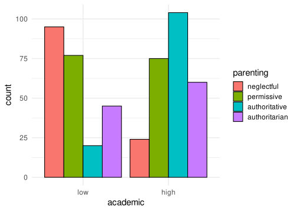
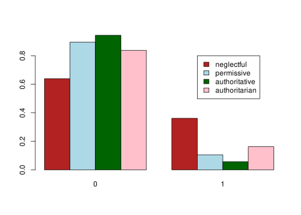
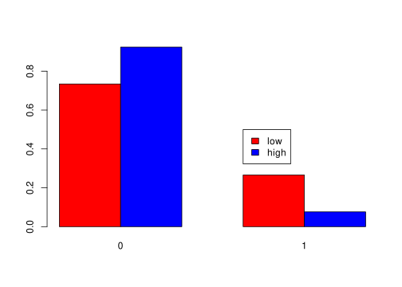
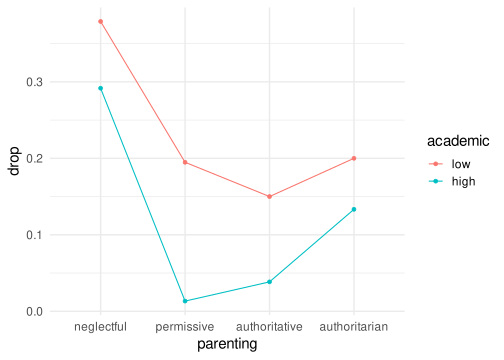
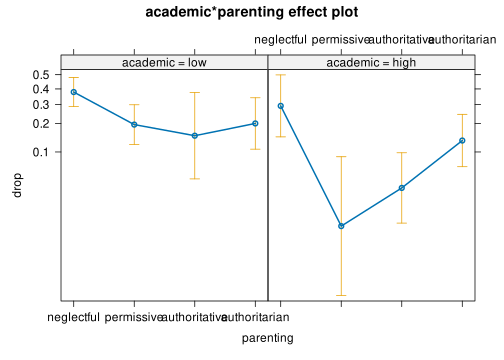
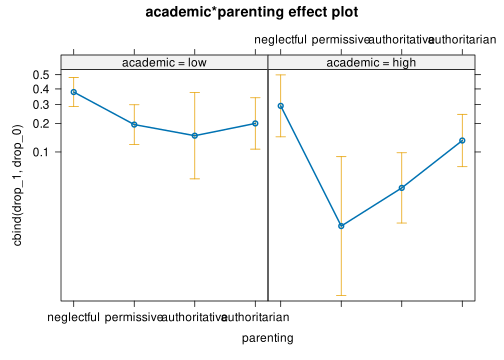
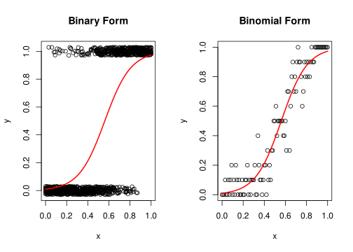
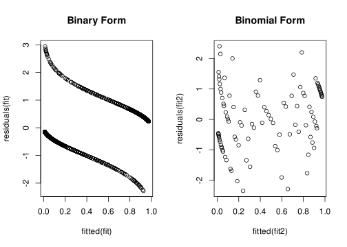

devtools::load_all() # if using the rproject dowloaded from the slides
# source("utils-glm.R") # if using a standard setup
library(here)
library(tidyr) # for data manipulation
library(dplyr) # for data manipulation
library(ggplot2) # plotting
library(car) # general utilities
library(effects) # for extracting and plotting effects
library(emmeans) # for marginal means
library(patchwork)Lab 3
data("drop")
dat <- dropOverview
This dataset dropout.csv contains data about dropouts during high school for nrow(dat) adolescents. We want to understand the impact of the parenting style (permissive, neglectful, authoritative, authoritarian) and the academic performance (high, low) on the probability of dropout (0 = no dropout, 1 = dropout).
- Importing data and overall check
- Exploratory data analysis of predictors and the relationships between predictors and the number of words
- Compute the odds ratio manually comparing the academic performances for each parenting style
- Model fitting with
glm()using the dataset in the binary form - Model fitting with
glm()using the dataset in the aggregated form - Plotting and interpreting effects of both models
- is there any difference? try to understand why
- Write a brief paragraph reporting the effects with your interpretation
1. Importing data and overall check
str(dat)'data.frame': 500 obs. of 4 variables:
$ id : int 1 2 3 4 5 6 7 8 9 10 ...
$ parenting: chr "permissive" "neglectful" "authoritative" "neglectful" ...
$ academic : chr "high" "low" "high" "low" ...
$ drop : int 0 0 0 1 0 0 0 0 0 0 ...Check for NA values:
sapply(dat, function(x) sum(is.na(x))) id parenting academic drop
0 0 0 0 Everything seems good, we do not have NA values.
Let’s convert categorical variables into factor setting the appropriate order:
parenting: neglectful, permissive, authoritative, authoritarianacademic: low, high
dat$parenting <- factor(dat$parenting, levels = c("neglectful",
"permissive",
"authoritative",
"authoritarian"))
dat$academic <- factor(dat$academic, levels = c("low", "high"))
levels(dat$parenting)[1] "neglectful" "permissive" "authoritative" "authoritarian"levels(dat$academic)[1] "low" "high"2. Exploratory data analysis
summary(dat) # not really meaningful id parenting academic drop
Min. : 1.0 neglectful :119 low :237 Min. :0.000
1st Qu.:125.8 permissive :152 high:263 1st Qu.:0.000
Median :250.5 authoritative:124 Median :0.000
Mean :250.5 authoritarian:105 Mean :0.166
3rd Qu.:375.2 3rd Qu.:0.000
Max. :500.0 Max. :1.000 With categorical variables we need to use absolute/relative frequencies and contingency tables.
Let’s start by univariate EDA:
# distribution of parenting styles
table(dat$parenting)
neglectful permissive authoritative authoritarian
119 152 124 105 table(dat$parenting)/nrow(dat)
neglectful permissive authoritative authoritarian
0.238 0.304 0.248 0.210 # distribution of academic performance
table(dat$academic)
low high
237 263 table(dat$academic)/nrow(dat)
low high
0.474 0.526 # overall dropout rate
table(dat$drop)
0 1
417 83 table(dat$drop)/nrow(dat)
0 1
0.834 0.166 # mean(dat$drop) # directlyLet’s create an overall plot:
plt_par <- dat |>
ggplot(aes(x = parenting)) +
geom_bar()
plt_academic <- dat |>
ggplot(aes(x = academic)) +
geom_bar()
plt_drop <- dat |>
ggplot(aes(x = factor(drop))) +
geom_bar()
plt_par / plt_academic / plt_drop
How to interpret?
Let’s now explore the bivariate relationships:
table(dat$parenting, dat$academic)
low high
neglectful 95 24
permissive 77 75
authoritative 20 104
authoritarian 45 60table(dat$academic, dat$parenting)
neglectful permissive authoritative authoritarian
low 95 77 20 45
high 24 75 104 60We can create tables with relative frequencies:
prop.table(table(dat$parenting, dat$academic), 1) # by row
low high
neglectful 0.7983193 0.2016807
permissive 0.5065789 0.4934211
authoritative 0.1612903 0.8387097
authoritarian 0.4285714 0.5714286prop.table(table(dat$parenting, dat$academic), 2) # by column
low high
neglectful 0.40084388 0.09125475
permissive 0.32489451 0.28517110
authoritative 0.08438819 0.39543726
authoritarian 0.18987342 0.22813688…and some plots:
dat |>
ggplot(aes(x = academic, fill = parenting)) +
geom_bar(position = position_dodge(),
col = "black")
Of course, we can compute the relative frequencies in multiple ways (total, row or column wise).
Then the bivariate relationships with the drop variable:
table(dat$parenting, dat$drop)
0 1
neglectful 76 43
permissive 136 16
authoritative 117 7
authoritarian 88 17prop.table(table(dat$parenting, dat$drop), 1)
0 1
neglectful 0.63865546 0.36134454
permissive 0.89473684 0.10526316
authoritative 0.94354839 0.05645161
authoritarian 0.83809524 0.16190476table(dat$academic, dat$drop)
0 1
low 174 63
high 243 20prop.table(table(dat$academic, dat$drop), 1)
0 1
low 0.73417722 0.26582278
high 0.92395437 0.07604563And the plots:
barplot(prop.table(table(dat$parenting, dat$drop), 1),
beside = TRUE,
col = c("firebrick", "lightblue", "darkgreen", "pink"))
legend(7, 0.8, legend = levels(dat$parenting),
fill = c("firebrick", "lightblue", "darkgreen", "pink"))
barplot(prop.table(table(dat$parenting, dat$drop), 1),
beside = TRUE,
col = c("firebrick", "lightblue", "darkgreen", "pink"))
legend(7, 0.8, legend = levels(dat$parenting),
fill = c("firebrick", "lightblue", "darkgreen", "pink"))barplot(prop.table(table(dat$academic, dat$drop), 1),
beside = TRUE,
col = c("red", "blue"))
legend(4, 0.5, legend = levels(dat$academic),
fill = c("red", "blue"))
Finally we can represent the full relationship:
dat |>
group_by(parenting, academic) |>
summarise(drop = mean(drop)) |>
ggplot(aes(x = parenting, y = drop, color = academic, group = academic)) +
geom_point() +
geom_line()
Comments? Main effects? Interactions?
3. Compute the odds ratio manually comparing the academic performances for each parenting style
Firstly we compute the probability of dropout for each category:
agg <- aggregate(drop ~ parenting + academic, FUN = mean, data = dat)
agg parenting academic drop
1 neglectful low 0.37894737
2 permissive low 0.19480519
3 authoritative low 0.15000000
4 authoritarian low 0.20000000
5 neglectful high 0.29166667
6 permissive high 0.01333333
7 authoritative high 0.03846154
8 authoritarian high 0.13333333Then we can compute the odds of the probabilities and the odds ratios
odds <- function(p) p / (1 - p)
agg$odds <- odds(agg$drop)
ors <- agg$odds[agg$academic == "high"] / agg$odds[agg$academic == "low"]
names(ors) <- unique(agg$parenting)
ors neglectful permissive authoritative authoritarian
0.67483660 0.05585586 0.22666667 0.61538462 Comments?
4. Model fitting with glm() using the dataset in the binary form
Let’s start fitting the null model:
fit0 <- glm(drop ~ 1, data = dat, family = binomial(link = "logit"))
summary(fit0)
Call:
glm(formula = drop ~ 1, family = binomial(link = "logit"), data = dat)
Coefficients:
Estimate Std. Error z value Pr(>|z|)
(Intercept) -1.6142 0.1202 -13.43 <2e-16 ***
---
Signif. codes: 0 '***' 0.001 '**' 0.01 '*' 0.05 '.' 0.1 ' ' 1
(Dispersion parameter for binomial family taken to be 1)
Null deviance: 449.49 on 499 degrees of freedom
Residual deviance: 449.49 on 499 degrees of freedom
AIC: 451.49
Number of Fisher Scoring iterations: 3The intercept is the overall odds of dropout:
exp(coef(fit0))(Intercept)
0.1990408 plogis(coef(fit0))(Intercept)
0.166 mean(dat$drop)[1] 0.166Let’s now fit a model with the two main effects:
fit1 <- glm(drop ~ academic + parenting, data = dat, family = binomial(link = "logit"))
summary(fit1)
Call:
glm(formula = drop ~ academic + parenting, family = binomial(link = "logit"),
data = dat)
Coefficients:
Estimate Std. Error z value Pr(>|z|)
(Intercept) -0.3921 0.1985 -1.975 0.048216 *
academichigh -1.0221 0.3030 -3.373 0.000742 ***
parentingpermissive -1.3446 0.3335 -4.031 5.55e-05 ***
parentingauthoritative -1.6402 0.4670 -3.512 0.000444 ***
parentingauthoritarian -0.7550 0.3412 -2.212 0.026935 *
---
Signif. codes: 0 '***' 0.001 '**' 0.01 '*' 0.05 '.' 0.1 ' ' 1
(Dispersion parameter for binomial family taken to be 1)
Null deviance: 449.49 on 499 degrees of freedom
Residual deviance: 392.66 on 495 degrees of freedom
AIC: 402.66
Number of Fisher Scoring iterations: 5Comments?
Let’s now fit the interaction model:
fit2 <- glm(drop ~ academic * parenting, data = dat, family = binomial(link = "logit"))
summary(fit2)
Call:
glm(formula = drop ~ academic * parenting, family = binomial(link = "logit"),
data = dat)
Coefficients:
Estimate Std. Error z value Pr(>|z|)
(Intercept) -0.49402 0.21149 -2.336 0.01950 *
academichigh -0.39328 0.49639 -0.792 0.42820
parentingpermissive -0.92507 0.35710 -2.590 0.00958 **
parentingauthoritative -1.24058 0.66097 -1.877 0.06053 .
parentingauthoritarian -0.89228 0.42850 -2.082 0.03731 *
academichigh:parentingpermissive -2.49170 1.15811 -2.152 0.03144 *
academichigh:parentingauthoritative -1.09099 0.94793 -1.151 0.24976
academichigh:parentingauthoritarian -0.09222 0.72769 -0.127 0.89915
---
Signif. codes: 0 '***' 0.001 '**' 0.01 '*' 0.05 '.' 0.1 ' ' 1
(Dispersion parameter for binomial family taken to be 1)
Null deviance: 449.49 on 499 degrees of freedom
Residual deviance: 384.58 on 492 degrees of freedom
AIC: 400.58
Number of Fisher Scoring iterations: 65. Model fitting with glm() using the dataset in the aggregated form
In this case we can easily fit the same model using the aggregated form. The aggregated form is a dataset without 1s and 0s but counting the number of 1s for each condition.
dat_agg <- dat |>
group_by(academic, parenting) |>
summarise(drop_1 = sum(drop),
drop_0 = sum(drop == 0)) |>
data.frame()
dat_agg$drop_tot <- dat_agg$drop_1 + dat_agg$drop_0Now we have a column with the number of 1s and a column with the total. Then we can also compute the number of 0s:
dat_agg academic parenting drop_1 drop_0 drop_tot
1 low neglectful 36 59 95
2 low permissive 15 62 77
3 low authoritative 3 17 20
4 low authoritarian 9 36 45
5 high neglectful 7 17 24
6 high permissive 1 74 75
7 high authoritative 4 100 104
8 high authoritarian 8 52 60The two dataset (dat and dat_agg) contains the same information. Let’s now fit the same models as before:
fit0_agg <- glm(cbind(drop_1, drop_0) ~ 1, data = dat_agg, family = binomial(link = "logit"))
summary(fit0)
Call:
glm(formula = drop ~ 1, family = binomial(link = "logit"), data = dat)
Coefficients:
Estimate Std. Error z value Pr(>|z|)
(Intercept) -1.6142 0.1202 -13.43 <2e-16 ***
---
Signif. codes: 0 '***' 0.001 '**' 0.01 '*' 0.05 '.' 0.1 ' ' 1
(Dispersion parameter for binomial family taken to be 1)
Null deviance: 449.49 on 499 degrees of freedom
Residual deviance: 449.49 on 499 degrees of freedom
AIC: 451.49
Number of Fisher Scoring iterations: 3Let’s now fit a model with the two main effects:
fit1_agg <- glm(cbind(drop_1, drop_0) ~ academic + parenting, data = dat_agg, family = binomial(link = "logit"))
summary(fit1_agg)
Call:
glm(formula = cbind(drop_1, drop_0) ~ academic + parenting, family = binomial(link = "logit"),
data = dat_agg)
Coefficients:
Estimate Std. Error z value Pr(>|z|)
(Intercept) -0.3921 0.1985 -1.975 0.048216 *
academichigh -1.0221 0.3030 -3.373 0.000742 ***
parentingpermissive -1.3446 0.3335 -4.031 5.54e-05 ***
parentingauthoritative -1.6402 0.4670 -3.512 0.000444 ***
parentingauthoritarian -0.7550 0.3412 -2.212 0.026935 *
---
Signif. codes: 0 '***' 0.001 '**' 0.01 '*' 0.05 '.' 0.1 ' ' 1
(Dispersion parameter for binomial family taken to be 1)
Null deviance: 64.902 on 7 degrees of freedom
Residual deviance: 8.079 on 3 degrees of freedom
AIC: 46.507
Number of Fisher Scoring iterations: 4Comments?
Let’s now fit the interaction model:
fit2_agg <- glm(cbind(drop_1, drop_0) ~ academic * parenting, data = dat_agg, family = binomial(link = "logit"))
summary(fit2_agg)
Call:
glm(formula = cbind(drop_1, drop_0) ~ academic * parenting, family = binomial(link = "logit"),
data = dat_agg)
Coefficients:
Estimate Std. Error z value Pr(>|z|)
(Intercept) -0.49402 0.21149 -2.336 0.01950 *
academichigh -0.39328 0.49639 -0.792 0.42820
parentingpermissive -0.92507 0.35710 -2.590 0.00958 **
parentingauthoritative -1.24058 0.66097 -1.877 0.06053 .
parentingauthoritarian -0.89228 0.42850 -2.082 0.03731 *
academichigh:parentingpermissive -2.49170 1.15876 -2.150 0.03153 *
academichigh:parentingauthoritative -1.09099 0.94793 -1.151 0.24976
academichigh:parentingauthoritarian -0.09222 0.72769 -0.127 0.89915
---
Signif. codes: 0 '***' 0.001 '**' 0.01 '*' 0.05 '.' 0.1 ' ' 1
(Dispersion parameter for binomial family taken to be 1)
Null deviance: 6.4902e+01 on 7 degrees of freedom
Residual deviance: 2.6645e-15 on 0 degrees of freedom
AIC: 44.428
Number of Fisher Scoring iterations: 4Do you notice any difference with the previous models?
6. Plotting and interpreting effects of both models
Let’s start by plotting the full model (in both forms):
plot(allEffects(fit2))
plot(allEffects(fit2_agg))
Let’s compare the coefficients:
car::compareCoefs(fit2, fit2_agg)Calls:
1: glm(formula = drop ~ academic * parenting, family = binomial(link =
"logit"), data = dat)
2: glm(formula = cbind(drop_1, drop_0) ~ academic * parenting, family =
binomial(link = "logit"), data = dat_agg)
Model 1 Model 2
(Intercept) -0.494 -0.494
SE 0.211 0.211
academichigh -0.393 -0.393
SE 0.496 0.496
parentingpermissive -0.925 -0.925
SE 0.357 0.357
parentingauthoritative -1.241 -1.241
SE 0.661 0.661
parentingauthoritarian -0.892 -0.892
SE 0.429 0.429
academichigh:parentingpermissive -2.49 -2.49
SE 1.16 1.16
academichigh:parentingauthoritative -1.091 -1.091
SE 0.948 0.948
academichigh:parentingauthoritarian -0.0922 -0.0922
SE 0.7277 0.7277
Now let’s interpret the effects. The “new” component is the interaction between two categorical variable. If the coefficients with one categorical variable is the log(Odds Ratio), the interaction is the difference between the two odds ratios. When transformed on the probability scale, the parameter is the ratio between odds ratios.
This is the odds ratio for the academic effect with neglectful parenting (i.e., the reference level):
coefs <- coef(fit2_agg)
coefs["academichigh"] # log odds ratioacademichigh
-0.3932847 exp(coefs["academichigh"]) # odds ratioacademichigh
0.6748366 agg parenting academic drop odds
1 neglectful low 0.37894737 0.61016949
2 permissive low 0.19480519 0.24193548
3 authoritative low 0.15000000 0.17647059
4 authoritarian low 0.20000000 0.25000000
5 neglectful high 0.29166667 0.41176471
6 permissive high 0.01333333 0.01351351
7 authoritative high 0.03846154 0.04000000
8 authoritarian high 0.13333333 0.15384615low <- agg$odds[agg$parenting == "neglectful" & agg$academic == "low"]
high <- agg$odds[agg$parenting == "neglectful" & agg$academic == "high"]
high/low[1] 0.6748366log(high/low)[1] -0.3932847Then the academichigh:parentingpermissive is the difference of the log odds ratios for low vs high for neglectful and permissive parenting styles.
coefs["academichigh:parentingpermissive"]academichigh:parentingpermissive
-2.491696 exp(coefs["academichigh:parentingpermissive"])academichigh:parentingpermissive
0.08276945 low_neg <- agg$odds[agg$parenting == "neglectful" & agg$academic == "low"]
high_neg <- agg$odds[agg$parenting == "neglectful" & agg$academic == "high"]
low_per <- agg$odds[agg$parenting == "permissive" & agg$academic == "low"]
high_per <- agg$odds[agg$parenting == "permissive" & agg$academic == "high"]
log((high_per / low_per)) - log((high_neg / low_neg))[1] -2.491696(high_per / low_per) / (high_neg / low_neg)[1] 0.08276945Similarly to the odds ratio, the ratio between two odds ratios can be interpreted in the same way:
- OR1 / OR2 > 1: the odds ratio for the numerator condition is x times higher than the odds ratio for the denominator condition
- OR1 / OR2 < 1: the odds ratio for the numerator condition is x times lower than the odds ratio for the denominator condition
Of course, the best way is using the predict() function:
preds <- expand.grid(parenting = c("neglectful", "permissive"),
academic = c("low", "high"))
preds$pr <- predict(fit2_agg, newdata = preds)
with(preds, (exp(pr)[4] / exp(pr)[2]) / (exp(pr)[3] / exp(pr)[1]))[1] 0.08276945Why the residual deviance is different between the aggregated and the binary model?
deviance(fit2)[1] 384.5843deviance(fit2_agg)[1] 2.664535e-15This is the main difference between the two approaches. Actually we do not have to compare the deviance of the two models e.g., the aggregated form is better because it is closer to 0 but we always need to compare the model with the null deviance.
anova(fit0, fit2, test = "LRT")Analysis of Deviance Table
Model 1: drop ~ 1
Model 2: drop ~ academic * parenting
Resid. Df Resid. Dev Df Deviance Pr(>Chi)
1 499 449.49
2 492 384.58 7 64.902 1.573e-11 ***
---
Signif. codes: 0 '***' 0.001 '**' 0.01 '*' 0.05 '.' 0.1 ' ' 1anova(fit0_agg, fit2_agg, test = "LRT")Analysis of Deviance Table
Model 1: cbind(drop_1, drop_0) ~ 1
Model 2: cbind(drop_1, drop_0) ~ academic * parenting
Resid. Df Resid. Dev Df Deviance Pr(>Chi)
1 7 64.902
2 0 0.000 7 64.902 1.573e-11 ***
---
Signif. codes: 0 '***' 0.001 '**' 0.01 '*' 0.05 '.' 0.1 ' ' 1As you can see the ratio is the same, thus the two deviances are on a different scale. The two models explains the same amount of (relative) deviance.
Why?
The reason is that we are computing the residual deviance from observed 0 and 1 vs observed counts.
# aggregated model deviance
-2*(sum(log(dbinom(dat_agg$drop_1, dat_agg$drop_tot, fitted(fit2_agg))) - log(dbinom(dat_agg$drop_1, dat_agg$drop_tot, dat_agg$drop_1/dat_agg$drop_tot))))[1] 0# binary model deviance
-2*(sum(log(dbinom(dat$drop, 1, fitted(fit2))) - log(dbinom(dat$drop, 1, dat$drop))))[1] 384.5843In a way it is more difficult to predict 0 and 1 compared to counts thus the residuals and the residual deviance will be always higher. Model coefficients, standard error and tests are the same.
Where the two models are not the same? Depends on the type of variables. Let’s add a new column to our binary dataset with the age of each student:
dat$age <- round(runif(nrow(dat), 12, 18))Now, if we want to include the age as predictor, we need to use the binary form because we have one value for each student. We are including a predictor at the level of the 0-1 values.
fit3 <- glm(drop ~ academic * parenting + age , data = dat, family = binomial(link = "logit"))
summary(fit3)
Call:
glm(formula = drop ~ academic * parenting + age, family = binomial(link = "logit"),
data = dat)
Coefficients:
Estimate Std. Error z value Pr(>|z|)
(Intercept) -2.13525 1.18409 -1.803 0.07134 .
academichigh -0.36755 0.49826 -0.738 0.46072
parentingpermissive -0.93360 0.35826 -2.606 0.00916 **
parentingauthoritative -1.21584 0.66221 -1.836 0.06635 .
parentingauthoritarian -0.90124 0.43013 -2.095 0.03615 *
age 0.10758 0.07618 1.412 0.15791
academichigh:parentingpermissive -2.49675 1.15915 -2.154 0.03124 *
academichigh:parentingauthoritative -1.12228 0.94987 -1.182 0.23740
academichigh:parentingauthoritarian -0.07370 0.73001 -0.101 0.91958
---
Signif. codes: 0 '***' 0.001 '**' 0.01 '*' 0.05 '.' 0.1 ' ' 1
(Dispersion parameter for binomial family taken to be 1)
Null deviance: 449.49 on 499 degrees of freedom
Residual deviance: 382.57 on 491 degrees of freedom
AIC: 400.57
Number of Fisher Scoring iterations: 6When we have predictors at the 0-1 levels, we need to use the binary form.
A little (visual) demonstration:
x <- seq(0, 1, 0.01)
dat <- data.frame(
x = rep(x, 10)
)
dat$lp <- plogis(qlogis(0.01) + 8*dat$x)
dat$y <- rbinom(nrow(dat), 1, dat$lp)
head(dat) x lp y
1 0.00 0.01000000 0
2 0.01 0.01082386 0
3 0.02 0.01171478 0
4 0.03 0.01267810 0
5 0.04 0.01371954 0
6 0.05 0.01484523 0Let’s fit the model in the binary form:
# model prediction
fit <- glm(y ~ x, data = dat, family = binomial())
# equivalent to predict()
pi <- plogis(coef(fit)[1] + coef(fit)[2]*unique(dat$x))Let’s fit the mode in the binomial form:
# aggregated form
dat_agg <- aggregate(y ~ x, FUN = sum, data = dat)
dat_agg$n <- 10 # total trials
dat_agg$f <- dat_agg$n - dat_agg$y
dat_agg$p <- dat_agg$y / dat_agg$n
head(dat_agg) x y n f p
1 0.00 0 10 10 0.0
2 0.01 0 10 10 0.0
3 0.02 0 10 10 0.0
4 0.03 1 10 9 0.1
5 0.04 0 10 10 0.0
6 0.05 0 10 10 0.0fit2 <- glm(cbind(y, f) ~ x, data = dat_agg, family = binomial())
pi <- plogis(coef(fit2)[1] + coef(fit2)[2]*dat_agg$x)The residuals (thus the residual deviance) will be always larger in the binary model (but the coefficients are the same):
par(mfrow = c(1,2))
jit <- runif(nrow(dat), -0.03, 0.03)
plot((y + jit) ~ x, data = dat, ylab = "y", xlab = "x",
main = "Binary Form")
lines(unique(dat$x), pi, lwd = 2, col = "red")
plot(y/n ~ x, data = dat_agg, ylab = "y",
main = "Binomial Form")
lines(dat_agg$x, pi, lwd = 2, col = "red")
This is the reason why binary model have also strange residuals:
# also residuals
par(mfrow = c(1,2))
plot(fitted(fit), residuals(fit), main = "Binary Form")
plot(fitted(fit2), residuals(fit2), main = "Binomial Form")